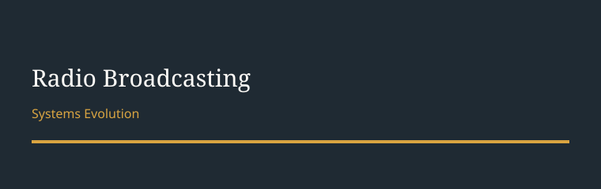

🏛️ Institutions & Markets
The Evolution of Radio Broadcasting
The Evolution of Radio Broadcasting: Government Regulation, Communication Technology, Radio Spectrum, Broadcasting Networks, and Media Distribution
Original images +
Original headings, exactly as written: Pre-radio; Radio Waves = Radio broadcasting; FCC. No single original headline is claimed. The chapter title is owner-given, not on a page.
Archive — Original images + notes (R18)
This appendix carries ALL labelling, provenance, and verification notes for this batch. Main text above carries no [Added] labels, no card references in bracket form, and no provenance commentary.
- Chapter title: "The Evolution of Radio Broadcasting: Government Regulation, Communication Technology, Radio Spectrum, Broadcasting Networks, and Media Distribution" — owner-given in chat 2026-10-30 09:29 IST, NOT on any page. It is a proposed chapter title, not an original headline. Page headings present are: Pre-radio; Radio Waves = Radio broadcasting; FCC. No single headline is claimed for this chapter.
- Original notes, verbatim in substance, from the five pages: US govt → FCC Act → FCC Agency → FRC Agency; Radio broadcast → Radio waves → Radio stations → Sender / Receiver; Commercial broadcast 1, NCE (Non comm ...) 2; Public N/W, Private N/W; AM, FM, DAB, DRM, digital, analog, Terrestrial; Spectrum; provides contents → Individual programming N/W, Affiliated N/W with a radio; broadcast syndication, and/or Simulcasting; Analog radio stations + NTSC TV; Pre-radio, Electronic distribution → Then radio casting → Net work casting, limited extent; Current list 1–4 as in intake; Independent FCC = 1934; FCC = regulates communications; Communications = by radio, television, wire, Internet, satellite, cable; Radio Waves = Radio broadcasting ⇒ broadcast stations of radio; broadcast = Terrestrial; Terrestrial = AM, FM and DAB; Satellite = satellite radio in earth orbit; orbit chain as in intake; Object = in motion, stay in motion until someone pushes or pulls; without gravity = earth orbit goes off into space a straight line, with gravity = pulled around; NCE → for educational programming; NCE Radio Stations → Don't only broadcasting, receive fees, for their non profit, uses org; call signs, frequency, band, city of license (as listed, spelling preserved in intake).
- Enhanced / model language, NOT on the pages: the five-part structure of main text (Government regulation, Communication technology, Radio spectrum, Broadcasting networks, Media distribution) follows the owner-given chapter title, not a five-part structure written on the pages. The limited-to-global pattern in the Media distribution section is a synthesis across pages, labelled here only.
- Unclear / cut-off / scribbled, archive only: heavy blue scribble lines cross all five pages and are not transcribed as content; many words are faint, crossed, or cut off at page edges, including the 4th Current item in hb-batch5-002, the 6th media type in hb-batch5-004, several orbit words in hb-batch5-003, "liccity" / "crate" in hb-batch5-005, and a left-margin date-like mark in hb-batch5-004, which is NOT assigned as sourceDate. None of these have been guessed in main notes. "Stations = originate sign" is left as written in intake, not expanded to "signal" in main notes.
- Verification status: original notes are transcribed verbatim, not Leo-verified. The claim "Independent FCC = 1934" is an original-note claim, not a Leo-verified fact in this turn. No Wikipedia or trusted-source verification has been done for Batch 5 in this turn, and no Leo-added factual claim about FCC history, spectrum law, or orbit physics has been added as fact. If such claims are added later, they require claim-by-claim verification under the verification rule, with sources kept for the future references page.
- Domains, proposed, not yet decided: primary institutions-markets (government, regulation, spectrum, FCC), secondary infrastructure-operations (radio waves, stations, transmitters, satellite), and industrial- business-networks (commercial / noncommercial networks, syndication, advertising, fees). No categories.json change has been made.
- Sequence, proposed, not yet decided: this batch does NOT extend Cards A–K in learning order. It is a new chapter, proposed as Card M, in the industry and founder path, in Communication history and Regulations, linking to Cards B, E, G, H, J, K, L. Owner can overrule placement.
- R19 SVG redraw: NOT claimed done for this batch. Diagrams on hb-batch5-001, hb-batch5-002, and hb-batch5-005 are dense, scribble-crossed, and partly unclear. A faithful redraw under R19 requires owner confirmation of unclear nodes and arrows first, or it would invent connections. That redraw is pending work.
- No private material, no source date: sourceDate = null for all five pages.
Scope note — U.S. and Indian broadcasting governance
Batch B005 will cover both U.S. and Indian broadcasting governance, per owner direction 2026-10-30 09:30 IST.
The pages received so far cover U.S. governance only. Indian broadcasting governance does not yet appear in Batch 5 source pages, and no Indian governance content has been added from memory to fill that gap. The chapter is incomplete against its stated scope until Indian pages arrive, or until the owner directs a verified added synthesis for the Indian part.
Audit 2026-10-30, correction 2: R14 distinction paragraph added to main text, same form as Batches 1-3. No original note changed.